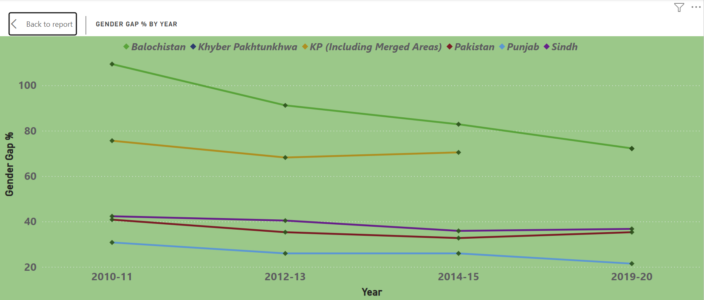

Power BI Dashboards
Two end-to-end projects built to answer real analytical questions — from raw public data to interactive, decision-ready dashboards.
Pakistan Literacy & Gender Gap Dashboard
Built an interactive analytics dashboard to evaluate literacy trends, gender disparity, school attendance, and digital access across Pakistan using decade-long provincial data.
Public provincial dataset
The objective of this dashboard was to identify literacy inequality trends, evaluate gender-based educational disparities, and surface province-level insights that could support data-driven educational planning and policy decisions.
Cleaned and transformed raw provincial datasets using Power Query, structured analytical tables for reporting, and created KPI-focused visual relationships to support trend analysis and cross-provincial comparison.



Key Findings
- Female school attendance nationwide is 40.40% vs. male 69.40% — a 29-point gap
- Balochistan has the widest literacy gap; Punjab performs best but still shows inequality
- Rural females have the lowest mobile access in every single province
- All provinces show improvement over time, but at an insufficient pace
- Digital access and literacy rates are strongly correlated across the dataset
Policy Implications
- Girls-focused enrollment programmes in Balochistan and KP as top priority
- Rural female education infrastructure investment where gaps are widest
- Mobile and digital learning expansion to underserved regions
- Province-specific funding allocation and monitoring frameworks
Global Bike Sales Performance Dashboard
Designed a multi-page sales intelligence dashboard to monitor revenue performance, target achievement, regional sales trends, and salesperson effectiveness across international markets using the AdventureWorks dataset.
Microsoft sample — bike company
Developed a reporting solution for monitoring sales performance, evaluating regional contribution, tracking target achievement, and identifying high-performing sales categories and representatives.
Top-level KPIs give leadership an instant health check: $77.5M total sales against a $676.2M target, a 0.11 target achievement ratio, and 18 active salespeople — paired with regional and yearly trend charts.
- Total Sales & Total Target KPIs — $77.5M actual vs $676.2M target, showing scale of the growth opportunity
- Target Achievement (0.11) — ratio of actual to target; indicates 11% attainment, useful for tracking rep incentive progress
- Sales by Region (Bar Chart) — United States dominates at ~$50M, with Canada a distant second
- Sum of Sales by Year (Line Chart) — revenue peaked in 2019 at ~$33M then declined in 2020

A country slicer drives all visuals simultaneously across Australia, Canada, France, Germany, UK, and US — enabling focused market analysis of categories and individual rep performance.
- Sales by Category (Bar Chart) — Bikes dominate at ~$60M+; Components, Clothing, and Accessories trail significantly
- Sales by Salesperson (Pie Chart) — Linda Mitchell leads at 13.1% share ($10.16M), followed by Jillian Carson at 12.58%
- Country × Salesperson Matrix — cross-tab revealing which reps operate in which markets and their exact revenue contributions

The analytical deep-dive — surfaces which countries are hitting targets, how categories distribute across geographies, and how each country's sales trend over time.
- Sales & Target Achievement by Country (Combo Chart) — US leads in absolute sales; achievement rate drops sharply for smaller markets
- Sales by Country & Category (Treemap) — US Bikes take the dominant block; Canada and France follow proportionally
- Sales by Year & Country (Line Chart) — US growth trajectory stands out clearly; other markets remain relatively flat

Key Findings
- US accounts for the majority of revenue (~$50M of $77.5M total)
- Bikes are the dominant category — far ahead of all others combined
- Top 2 reps (Linda Mitchell, Jillian Carson) account for ~25% of all sales
- Revenue peaked in 2019 across most markets then declined in 2020
- Target achievement of 0.11 signals significant headroom for growth strategy
Skills Demonstrated
- Data storytelling through executive-level KPI dashboards and trend analysis
- Business performance analysis using comparative and time-series visualisations
- Interactive reporting with slicers, drilldowns, and cross-filtering behaviour
- Dashboard structuring for executive summaries and operational reporting
- Multi-page report design with consistent visual language across all pages
- Cross-filtering country slicer driving multiple visual types simultaneously
- Treemap for proportional, hierarchical category-country breakdowns
- Matrix table for salesperson-country performance cross-analysis
- Dual-axis combo chart combining sales bars with achievement rate line